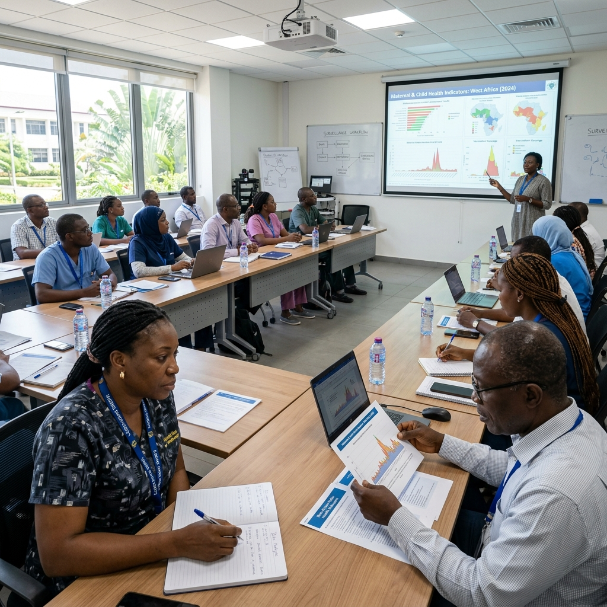
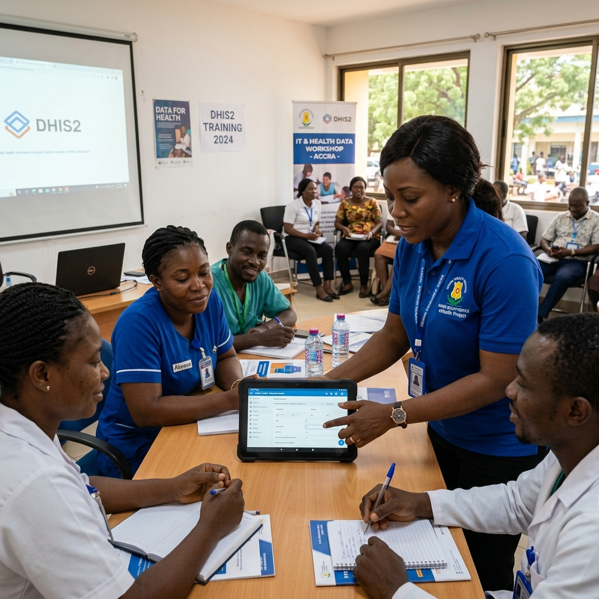

Études & Formations
DAVYCAS accompagne les institutions de santé dans la conception, la mise en œuvre, l’analyse et la valorisation d’études en santé publique, tout en renforçant les capacités techniques des équipes terrain.

Une expertise au service des politiques de santé publique
La santé publique étant le principal domaine d’intervention de DAVYCAS, plusieurs projets d’études ont été réalisés sous son leadership. Ces travaux contribuent à documenter les décisions sanitaires, renforcer les capacités des équipes et améliorer l’efficacité des interventions de terrain.
Études épidémiologiques
Conception, coordination et mise en œuvre d’études de portage, de surveillance et d’évaluation en santé publique.
Recherche opérationnelle
Production de données probantes pour améliorer les politiques, les pratiques et l’organisation des interventions sanitaires.
Renforcement des capacités
Formation des équipes, appui méthodologique et accompagnement technique des utilisateurs et enquêteurs.
Des études menées sur des enjeux sanitaires majeurs
Études de portage des germes méningés avant et après l’introduction du vaccin.
Étude sur l’efficacité vaccinale PCV13 et MenAfriVac.
Études de portage pneumocoque.
Évaluation de l’impact de l’introduction du vaccin MenA.
Analyse de l’amélioration de la couverture en RR2.
Un département dédié à la recherche et au renforcement des capacités
À travers son nouvel organigramme, DAVYCAS dispose d’un département orienté vers la recherche, la coordination des études, la production de données et le renforcement des compétences techniques.
Coordonner la mise en œuvre des études de portage des germes méningés et pneumocoque.
Concevoir les protocoles d’enquêtes.
Concevoir les méthodologies d’échantillonnage appropriées selon les études.
Assurer la coordination des équipes d’enquêteurs.
Assurer le traitement et l’analyse des données des études et enquêtes.
Coordonner les publications scientifiques.
Participer à des appels à projets de recherche en santé publique.
Participer à des appels à projets pour l’implémentation de systèmes d’information innovants dans le domaine de la santé.
Fournir du contenu pour l’animation du site web.
Former les utilisateurs pour pérenniser les systèmes
En tant qu’implémentateur de solutions informatiques dans le domaine de la santé, DAVYCAS apporte un appui technique aux institutions utilisant des systèmes électroniques d’information sanitaire de routine et de surveillance épidémiologique. Cet accompagnement passe par la formation, le renforcement des capacités et l’appui continu aux utilisateurs.

Maîtrise des outils numériques
Amélioration de la qualité des données
Autonomie des équipes
Suivi post-formation
Notre méthode d’intervention
Diagnostic
Évaluation des besoins et contexte
Conception
Élaboration des protocoles
Déploiement terrain
Coordination des enquêtes
Analyse & restitution
Traitement des données collectées
Capitalisation
Valorisation et publications
Transformer les données et les compétences en décisions utiles
Données fiables
Décisions éclairées
Équipes renforcées
Interventions mieux pilotées
Vous souhaitez conduire une étude ou former vos équipes ?
DAVYCAS International accompagne les institutions sanitaires dans la conception d’études, l’analyse de données, la formation des utilisateurs et le renforcement des capacités techniques.